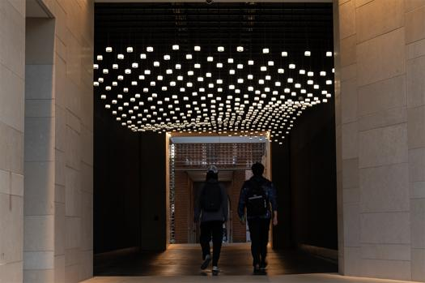
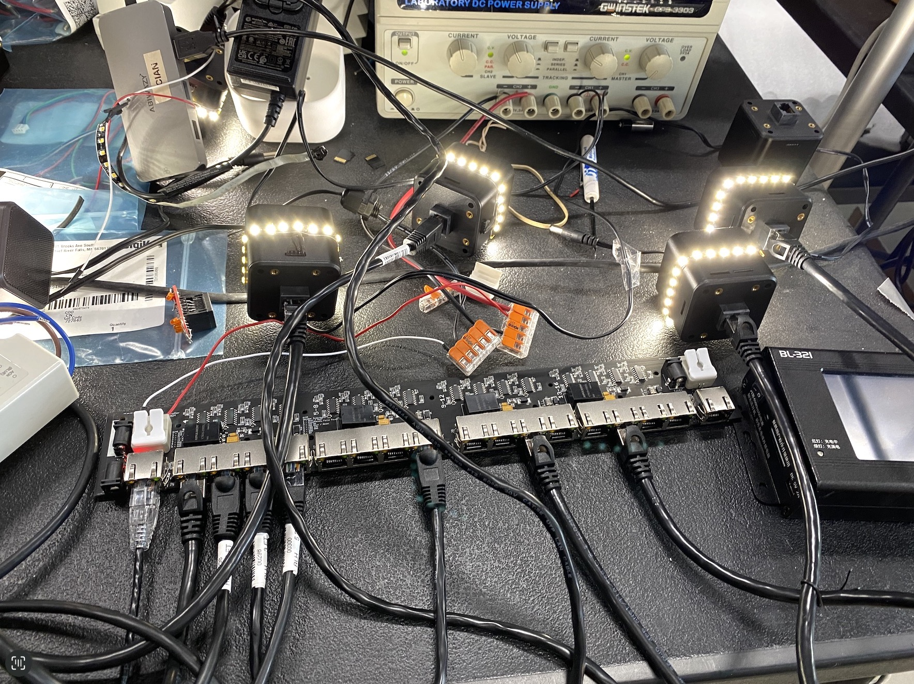

Climate Parliament, 2024
| 👤 for | Rafael Lozano-Hemmer |
|---|---|
| # Year | 2024 |
| 🔗 Official Site | lozano-hemmer.com/climate_parliament.php |
| 📋 I did | Hardware |
“Climate Parliament” is an interactive sound and light installation featuring thousands of audio channels playing on small, custom-made loudspeakers, suspended under the ceiling of a semi-outdoor passageway at Rice University. The speakers are hung out of reach of passers-by in a regular, but staggered formation that creates semi-circular archways with a six-foot radius.


Acknowledgment
This artwork by Rafael Lozano-Hemmer is the result of the combined efforts of a talented and diverse group of professionals. Each person has contributed unique skills and expertise to the creation of this piece. For more information about the team and their roles, please visit our official website.